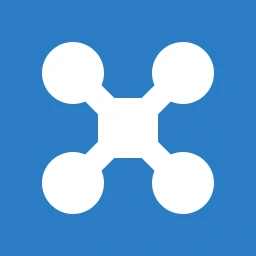
Next Level Drone Cleaning
a brand built from scratch

Next Level Drone Cleaning washes Belgium’s roofs, facades, windows and solar panels by drone: four times faster than scaffolding crews, with none of the fall risk.
Sebastien had the business; it needed a face. From a chance meeting in Madrid we built one from scratch: nine versions of a mark, three colorways, and a rollout across web, socials and apparel.
- role
- Founding Designer
- when
- Jul – Sep 2025
- surfaces
- Web · Socials · Apparel
- tools
- Illustrator · Photoshop · Gemini
Story
a night out in Madrid
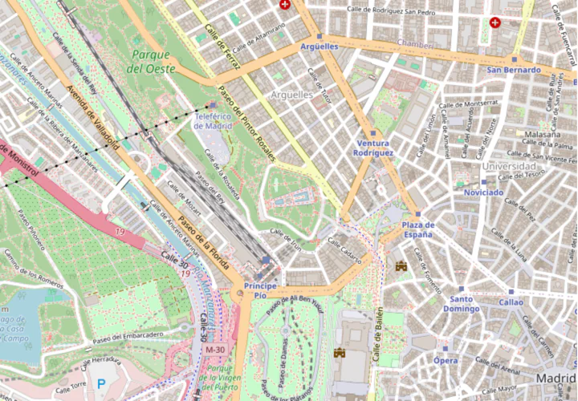
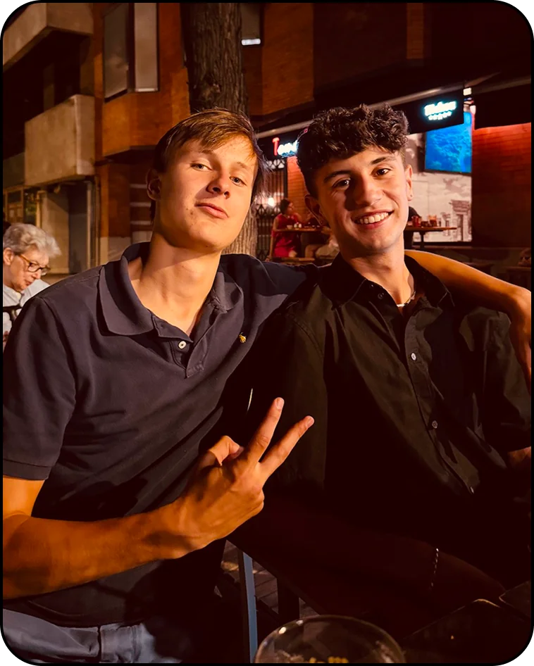
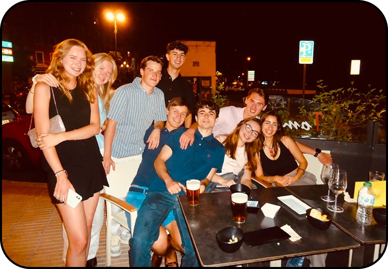
Summer 2025: a Foreign Language Acquisition Grant from UChicago sent me to Madrid to study Spanish. On a night out I met Sebastien, an up-and-coming entrepreneur running a Belgian drone-cleaning business.
A designer looking for new clients; a founder looking for a fresh identity. The pairing was perfect, so we quickly got to work.
Discovery
questions before a single sketch
Before drawing anything I interviewed Sebastien with the essential questions from Michael Johnson’s Branding: In Five and a Half Steps. His answers are the brief.
Why are we here?
“We are here to revolutionize the way we clean buildings. In Belgium, cleaning high-rises takes large teams and expensive scaffolding. Drone cleaning cuts the danger and the unnecessary cost; done well, we can disrupt the status quo.”
What do we do?
“Professional drone cleaning for roofs, facades, windows and solar panels. Aerial technology and pure osmosis water take away the need for scaffolding: four times faster, safer, and eco-friendly, across Belgium.”
What makes us different?
“Efficiency: our drones are four times faster and 20% cheaper, at €5 per m². We take away 99% of the fall risk while reaching heights without heavy machinery.”
Who are we here for?
“Homes and businesses across Belgium: homeowners, companies and facility managers who need high or hard-to-reach places cleaned.”
What do we value?
“Safety and innovation above all. Replacing dangerous scaffolding with drones protects our team and your property: sustainable, high-quality cleaning that respects the environment.”
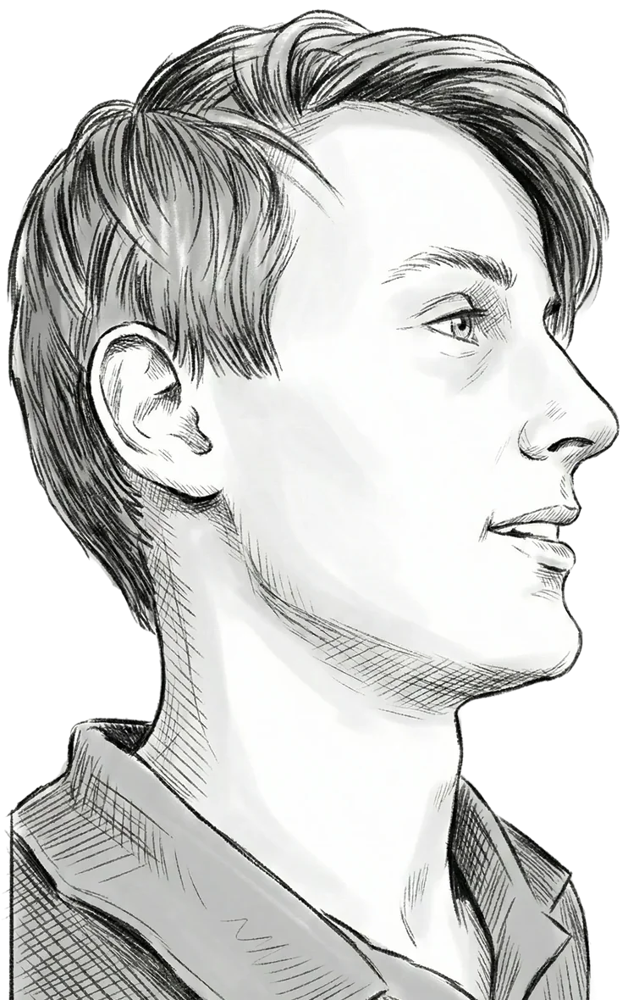
Sebastien Bouckaert, founderdistilled into
which raised the question
How might one mark feel approachable and professional at once?
Process
nine versions, two notes
I sent the ideas in batches, each with a story: literal symbols, then characters, then wordmarks. Naming what each batch felt like gave Sebastien the words for what he wanted, and two notes from him turned nine sketches into one mark.
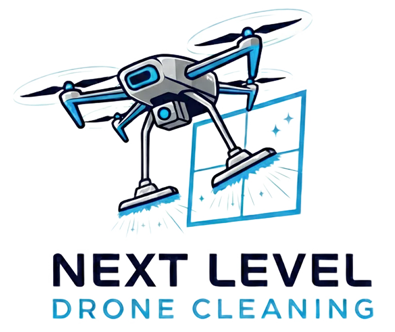
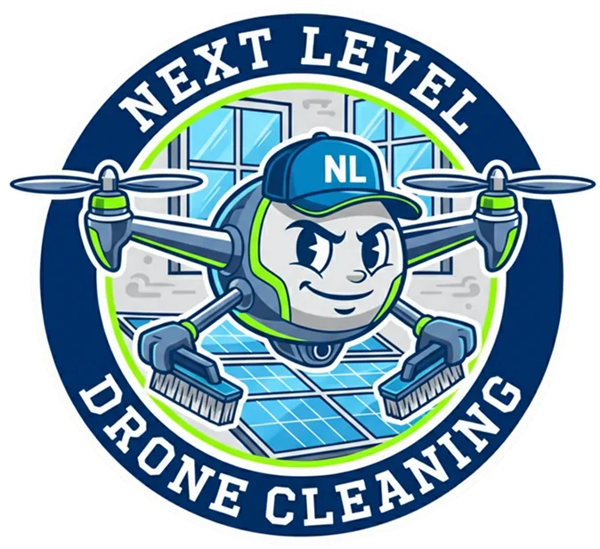
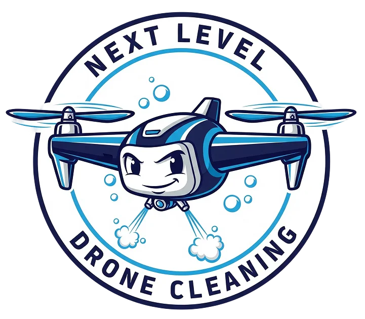
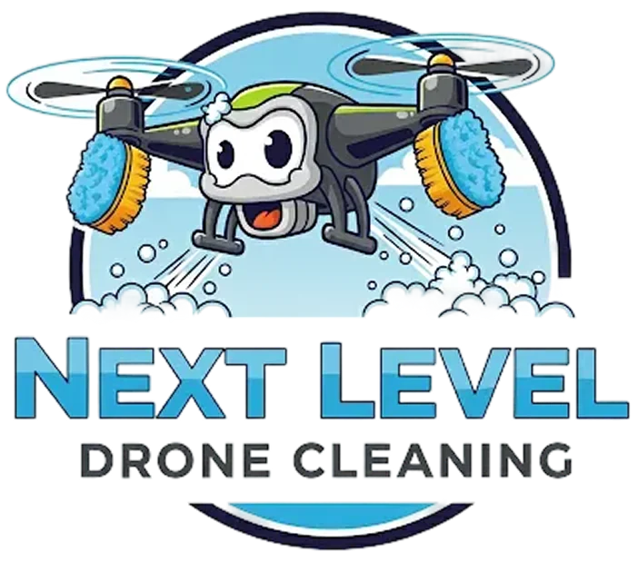
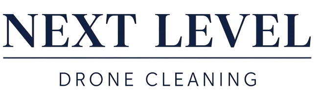
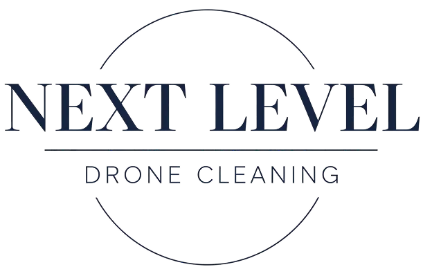
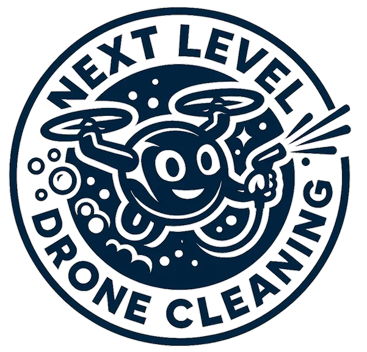
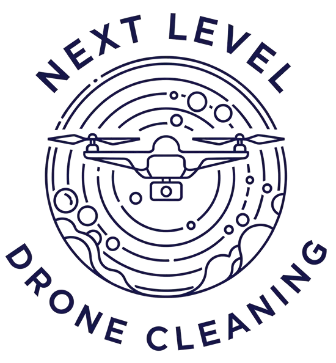
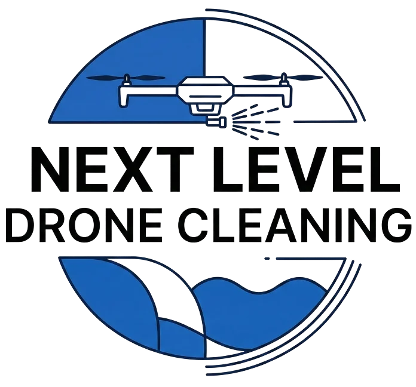
Mark
both worlds in one badge
Professional through restraint: a minimal line drone over the name, set bold and clean. Approachable through colour: a vibrant blue that keeps it friendly.
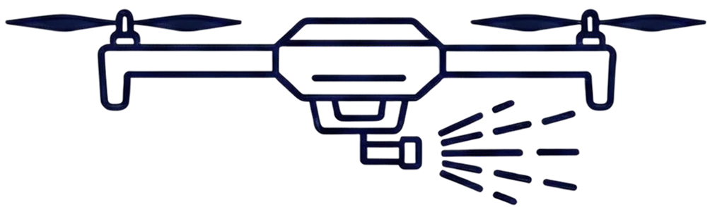
-
grey
set aside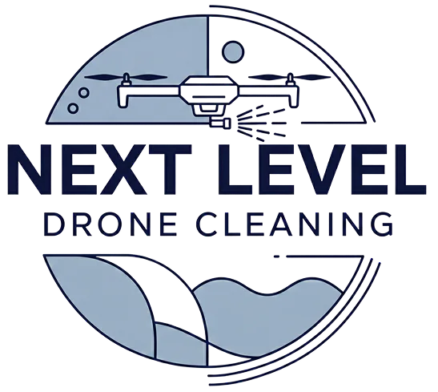
#A0B3C6 -
dark blue
set aside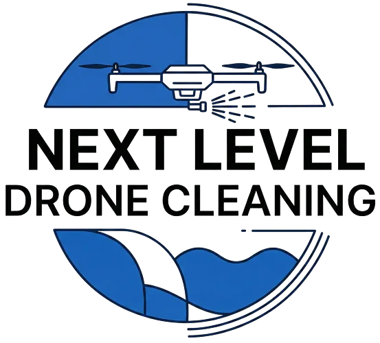
#1B5FB1 -
light blue
shipped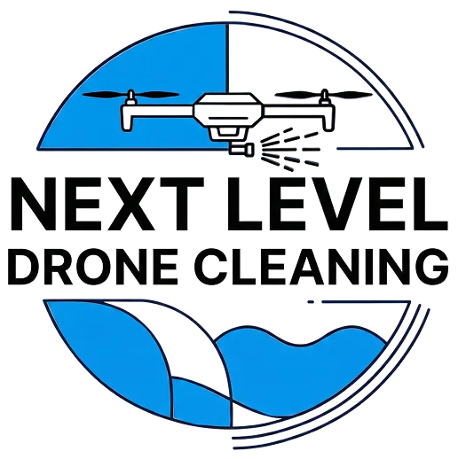
#0495EB
each colour sampled from the mark itself
why the ninth: it scales
drag to shrink bothSebastien’s last note asked for a mark that works at any size: shrink both to a browser tab, and the line drone fades to a smudge while the badge is still a bold blue mark
Rollout
one mark, everywhere
web
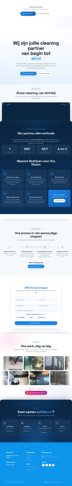
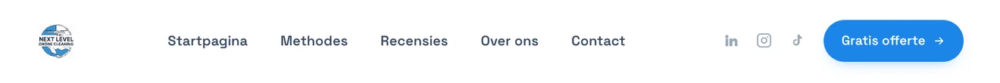
(opens nextleveldronecleaning.be in a new tab)apparel
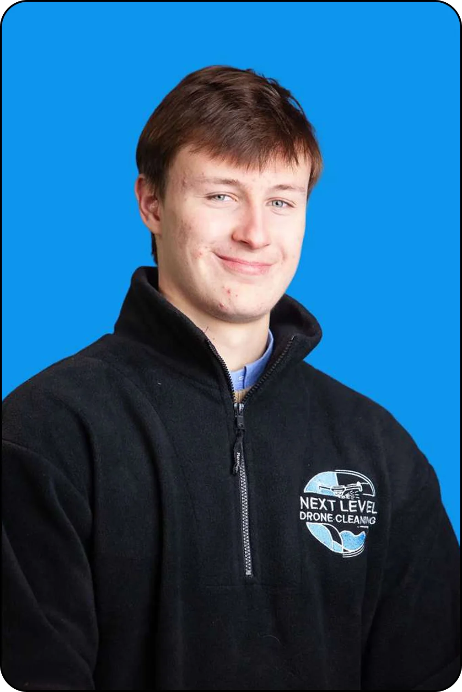
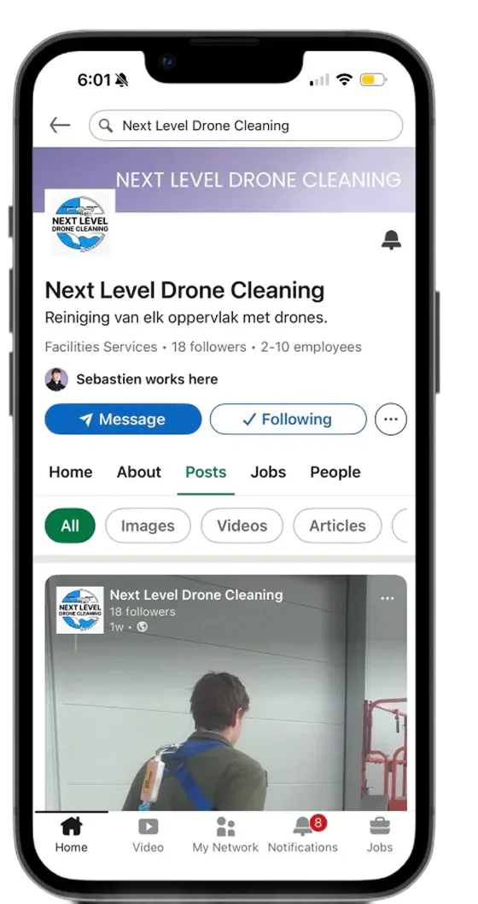
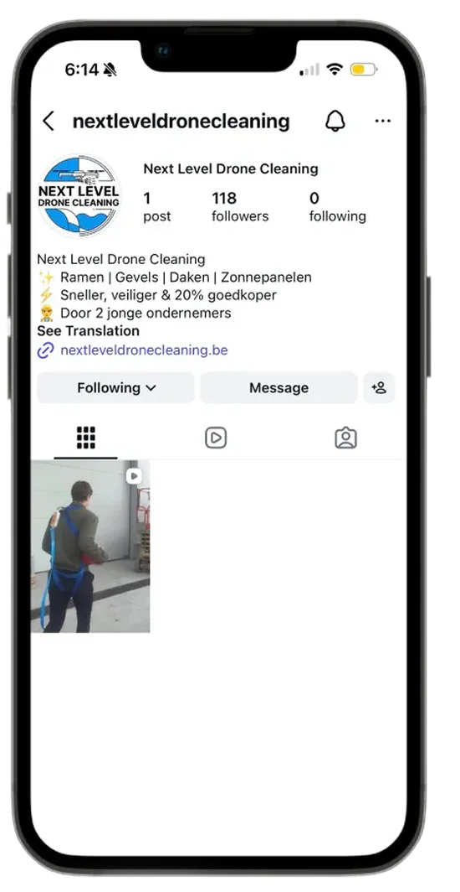
tiktok
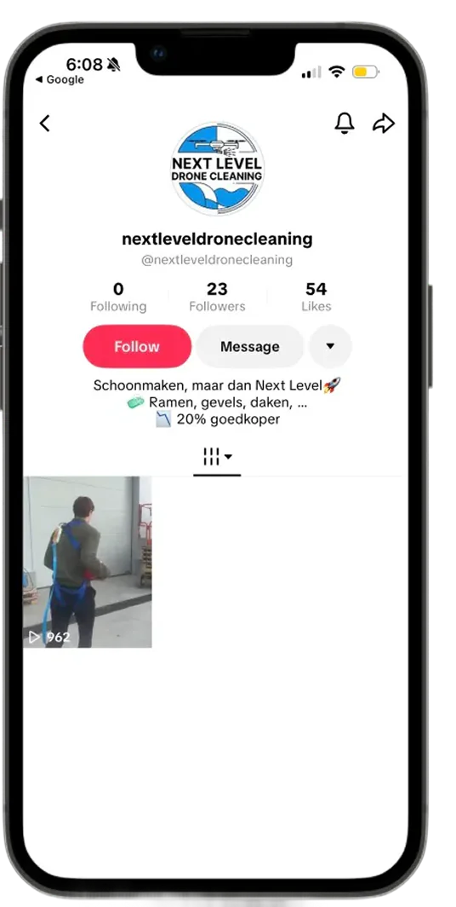
Reflection
what the mark taught me
9 → 1versions of the mark before the final badge
5essential questions asked before a single sketch
3colorways, and the light blue shipped
5surfaces carrying the brand: web, three socials, and apparel
- The logo serves the story. Interviewing Sebastien first made every sketch mean something; the visuals came second.
- Present in batches, with stories. Naming each direction’s character gave Sebastien the words for what he wanted.
- Synthesize, don’t select. The final badge merged the playful and the professional instead of picking a side.